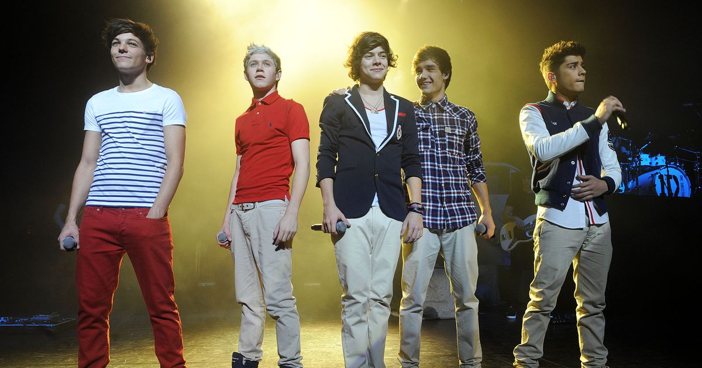
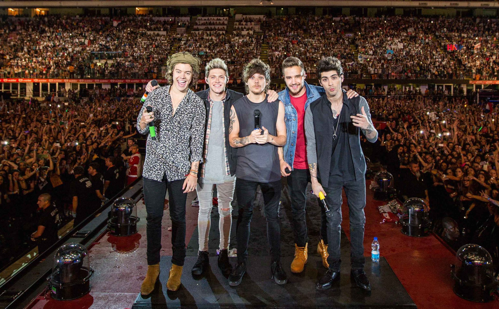
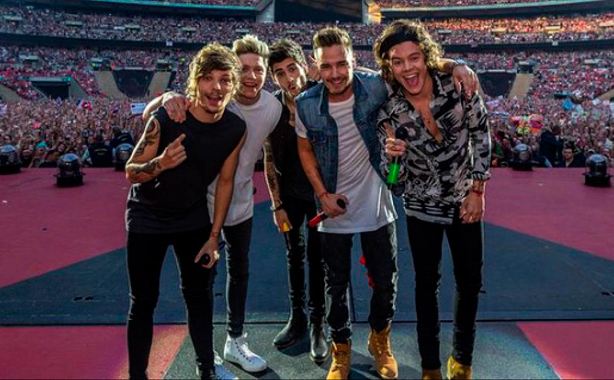
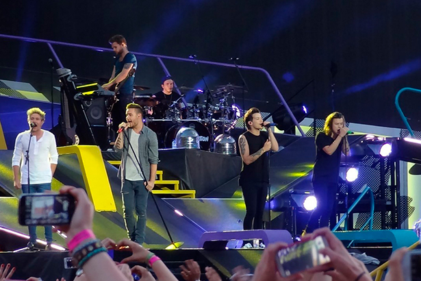
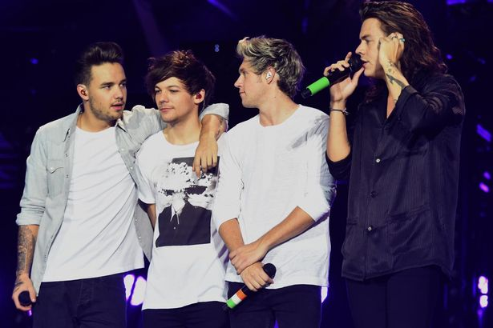

UP ALL NIGHT TOUR

La primera gira musical de One Direction tiene el mismo nombre que su primer álbum. El "Up All Night Tour" empezó a mediados de diciembre de 2011 en Watford,Reino Unido y finalizó a principios de Julio de 2012 en Sunrise, Estados Unidos. Además, visitaron países como México, Canadá, Irlanda, Nueva Zelanda y Australia. En el repertorio, además de las canciones del disco, hacían un popurrí de forma acústica de "I Gotta Feeling" (The Black Eyed Peas), "Stereo Hearts" (Gym Class Heroes), "Torn" (Ednaswap) y "Valerie" (The Zutons)
TAKE ME HOME TOUR
.jpg)
El segundo álbum tiene el mismo nombre que su segunda gira, como pasaba con "Up All Night" explicado anteriormente. Comenzó a fines de Febrero de 2013 en Londres, Reino Unido y terminó en Noviembre de ese mismo año en Tokio, Japón. Otros países incluídos en el "Take Me Home Tour" fueron México, Estados Unidos, Canadá, España, Francia, Alemania, Australia, Bélgica y Nueva Zelanda. La lista de canciones había tanto de "Take Me Home" como también de "Up All Night". También agregaron el mashup de "One Way or Another (Teenage Kicks)", un cover de "Teenage Dirtbag" (versión de Wheatus) y a partir de la función del 30 de Julio añadieron "Best Song Ever", sencillo de su tercer disco "Midnight Memories".
WHERE WE ARE TOUR


Fue la tercera gira mundial de One Direction en 2014 que empezó a fines de Abril en Bogotá, Colombia y finalizó a principios de Octubre en Miami, Estados Unidos. El "Where We Are Tour" fue recorriendo el Reino Unido y, además, fue la primera gira donde One Direction visitó América del Sur: Perú, Chile, Argentina, Uruguay, Brasil y Paraguay. En el repertorio se encuentran tanto sencillos como canciones de los tres discos hasta ese momento.
ON THE ROAD AGAIN TOUR


Fue la cuarta gira musical donde se dividió en varias etapas. La primera comenzó en febrero de 2015 en Sidney, Australia y terminó a finales el mismo mes en Perth. La segunda parte se centró en Asia ya que inició el 24 de Febrero del mismo año en Osaka, Japón y finalizó el 25 de Marzo en Yakarta, Indonesia. Continuaron con el tour por África desde el 28 de Marzo en Johannesburgo hasta el 1° de Abril en Ciudad del Cabo. Siguieron por Europa (Austria, Bélgica, Suecia, etcétera), Norteamérica (Estados Unidos y Canadá) y volvieron a Europa (Reino Unido e Irlanda) para terminar la gira el 31 de Octubre siendo así el último show de One Direction como banda.